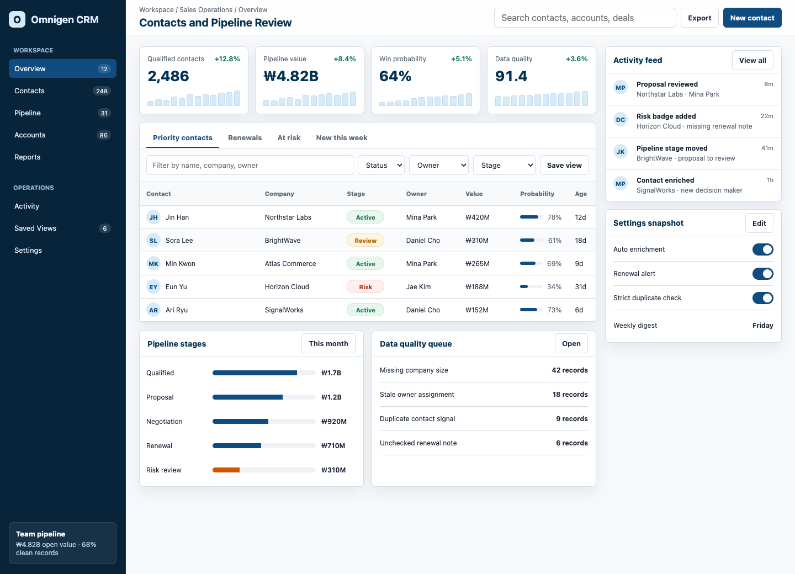

Omnigen CRM 디자인 시스템 생성 데모
로컬 Omnigen vault에서 CRM 대시보드에 맞는 UI 레퍼런스를 골랐고, 그 신호를 하네스의 디자인 시스템 산출물과 목업 UI로 연결했습니다. 이미지는 배포물에 넣지 않고, 프로젝트 내부의 ignored build 경로에 symlink로만 연결했습니다.
목업 UI 열기
이번에 만든 것
이 데모는 단순한 화면 한 장이 아니라, 디자인 시스템 생성 흐름 전체를 보여줍니다. 먼저 제품 설명과 브랜드 입력값을 만들고, Omnigen vault에서 관련 UI 이미지를 골랐습니다. 그다음 하네스가 `system_spec.md`, `token_schema.json`, `component_inventory.json`, `component_specs.md`, `design_context_pack.json`을 생성했고, 그 결과를 바탕으로 정적 목업 UI를 만들었습니다.
목업은 `dense dashboard grid`, `flat card surfaces`, `thin dividers`, `split-pane workspace`, `utilitarian typography`를 기준으로 삼았습니다. 색상은 스펙에 나온 blue 계열 semantic role을 쓰되, 실제 업무 화면에서는 밝은 surface와 얇은 border를 중심으로 정리했습니다.
목업 사용법
이제 목업은 단순 이미지가 아니라 눌러볼 수 있는 프로토타입입니다. 아래 기능들은 모두 브라우저 안에서 바로 반응합니다. 별도 사용 설명서는 USER_GUIDE.md에도 정리했습니다.
실행 절차
프로젝트 입력값 작성
`brand_profile.json`에는 CRM, analytics, contacts, pipeline, dense 같은 제품 키워드를 넣었습니다. `spec.md`에는 KPI 카드, 연락처 테이블, 필터 툴바, 파이프라인 보드, 설정 탭 같은 핵심 화면과 컴포넌트를 적었습니다.
Omnigen 레퍼런스 선별
로컬 vault의 `index.sqlite`에서 `app-design`, `web-design` 카테고리를 검색했습니다. 쿼리와 subject, tags, style, palette, mood, prompt가 맞는 이미지를 점수화했고, 중복 hash와 subject 편중을 줄여 12장을 골랐습니다.
uv run design-ontology select-omnigen-references \
--project-dir projects/omnigen-crm-demo \
--query "crm analytics dashboard contacts settings table kpi sales pipeline" \
--category app-design \
--category web-design \
--count 12 \
--orientation landscape \
--sync-sourcesVisual reference 분석
선별된 12장을 `visual_reference.sources`에 연결한 뒤, 이미지에서 화면 밀도, 표면감, 레이아웃 리듬, 컴포넌트 형태 힌트를 추출했습니다.
uv run design-ontology analyze-visuals \
--project-dir projects/omnigen-crm-demo디자인 시스템 산출물 생성
기존 KB, 브랜드 입력값, 제품 spec, Omnigen visual signal을 합쳐 디자인 시스템 설계서를 만들었습니다.
uv run design-ontology run-project \
--project-dir projects/omnigen-crm-demo목업 UI 제작과 캡처
생성된 스펙을 읽고 목업 UI를 만들었습니다. 이후 Playwright로 1440px 데스크톱 화면을 캡처해 이 리포트에 넣었습니다.
뽑힌 디자인 신호
| 생성 신호 | 목업에 반영한 위치 | 적용 방식 |
|---|---|---|
| dense dashboard grid | KPI 카드, 연락처 테이블, 우측 활동 패널 | 넓은 hero 대신 업무 화면을 첫 화면에 배치하고, 카드와 테이블 간격을 촘촘하게 잡았습니다. |
| flat card surfaces | 카드, 패널, 툴바 | 그림자는 약하게 쓰고, `#D6DDE6` 계열 border로 surface를 구분했습니다. |
| split-pane workspace | 좌측 sidebar와 우측 보조 패널 | 고정 사이드바, 중앙 업무 영역, 우측 activity/settings 패널로 화면을 나눴습니다. |
| restrained blue accent | primary button, active tab, progress meter | 강한 색은 핵심 액션과 현재 위치에만 쓰고, 상태색은 success/warning/danger로 분리했습니다. |
샘플 레퍼런스 이미지
아래 이미지는 Omnigen vault에서 선별된 12장 중 일부입니다. 프로젝트에는 원본을 복사하지 않았고, `build/visuals/omnigen-selected/` 아래 symlink만 만들었습니다. 그래서 이 데모를 배포할 때 대용량 이미지가 본체에 섞이지 않습니다.


생성된 산출물
system_spec.md
브랜드 방향, 토큰 전략, color reference, visual signal, 컴포넌트 정책이 들어간 핵심 설계서입니다.
token_schema.json
core, semantic, component layer와 color, spacing, typography, motion, elevation token 전략입니다.
component_inventory.json
제품 spec에서 도출한 컴포넌트 패밀리와 우선순위를 정리한 inventory입니다.
component_specs.md
99개 컴포넌트 스펙이 구조, 상태, 접근성, 적용 규칙 중심으로 생성됐습니다.
visual_reference_report.json
Omnigen 이미지에서 관찰·추론된 density, surface, layout, component hints가 들어 있습니다.
mockup/index.html
생성된 디자인 시스템 신호를 화면으로 옮긴 CRM 대시보드 목업입니다.